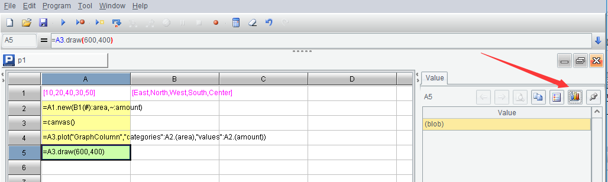
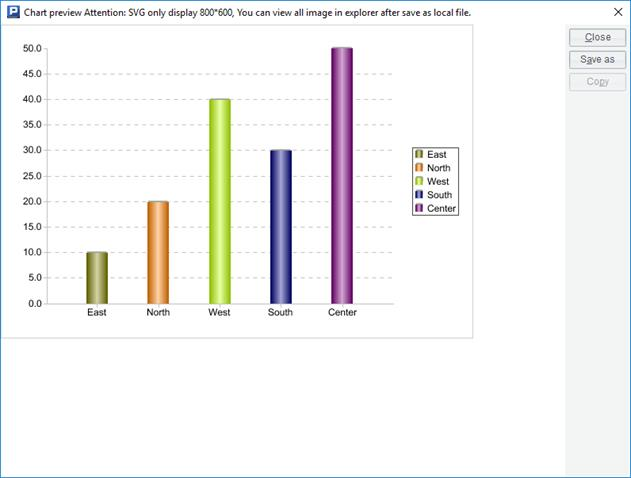
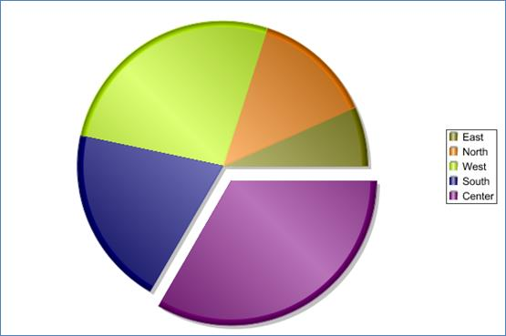
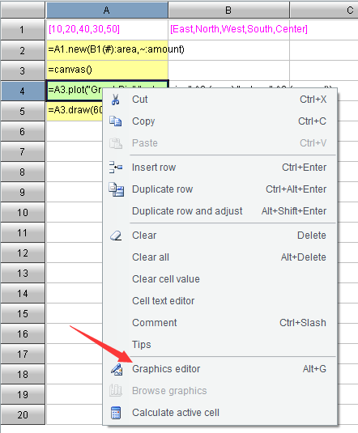
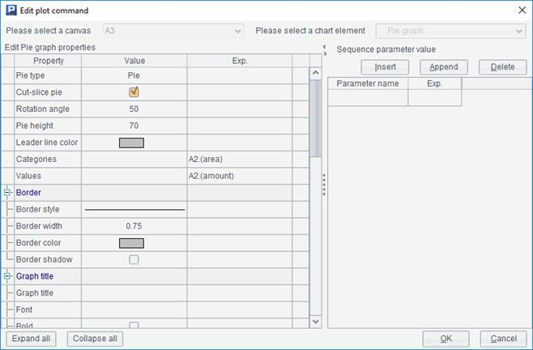
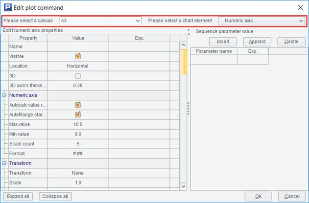
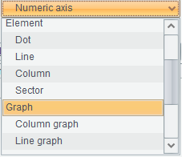

Programming language can not only help us do data processing, but also draw graphs.
Let's start with a simple example£º
|
|
A |
B |
|
1 |
[10,20,40,30,50] |
[East,North,West,South,Center] |
|
2 |
=A1.new(B1(#):area,~:amount) |
|
|
3 |
=canvas() |
|
|
4 |
=A3.plot("GraphColumn","categories":A2.(area),"values":A2.(amount)) |
|
|
5 |
=A3.draw(600,400) |
|
Be careful not to write the code wrong. The string contents should be exactly the same. SPL is a case sensitive language.
After execution, click A5 and you will see the following result:

Now click the icon button on the right, and esProc will pop up a graph:

Comparing with the data in table sequence A2, we will find that this graph is a statistical chart drawn with these data.
Let's explain this code.
We are already familiar with the first two lines. The canvas() function of A3 will return an object we call the canvas. The plot() function of A4 will plot on the canvas, and then use the draw() function of A5 to actually draw it. After the graph is drawn, the canvas is still an object in memory. We need to use a special program to display it, that is, what to be done after clicking the button on the right, and the graph we see appears.
Computer drawing requires a plane rectangular area (because the screen and paper are all this shape), and the canvas simulates such an area. The plot() function is responsible for plotting on the canvas. The plot() function of SPL is a bit like a deferred cursor. It does not really draw the graph directly on the canvas, but just notes what to draw. Only when the draw() function is executed does the drawing really start, and a graphic object that can be used for display is returned (it is different from the canvas. You can click the cell to see the value).
The parameter of the draw() function is the number of pixels (readers familiar with mobile phones will not be unfamiliar with this concept), that is, it indicates how big the final graph to be drawn is. Only after knowing this information can SPL start real drawing. This parameter is not appropriate to be given when creating the canvas, because the graph produced by the same set of plot() statements can be presented in different sizes. For example, we can write another statement in A6
=A3.draw(400,300)
It will change the size of the graph and draw it again.
However, usually we don't need to change many sizes. Generally, there is only one draw(). Therefore, it can be simply understood that plot() is drawing, but it needs a draw() to specify the size before presenting. Let's focus on the plot() function in the future. All the plot collections in SPL are solved by this function.
Now let's change the first parameter of the plot() function in A4:
=A3.plot("GraphPie","categories":A2.(area),"values":A2.(amount))
The result is a pie chart:

In the future, the screenshot only has the middle graphic part, not the window edge.
The outer frame is added during book typesetting, not the content of the graph itself. This will also happen later.
It seems that the plot() function can do many things. What are its parameters? What else can it draw?
Right click A4 and a menu will pop up, including an item "Graphics editor":

Select this menu item and a dialog box will pop up:

The first column on the left is the parameters of the plot() function! There are so many that it's easy to see when you have to expand and collapse. The right part is used to edit sequence type parameter settings, which will be used in the following section when we talk about legends.
There are too many parameters of the plot() function, and it is too difficult to fill in the code directly, so esProc has made an editing dialog to facilitate programmers to fill in the parameters.
You can try to modify these parameters to see the effect. Most of them are graphic appearance attributes, and there is no need to explain them here.
Now delete the code in cell A4, right-click to get the menu and select the graphics editor item. This dialog box will also pop up:

But unlike just now, the content on the top can be edited. The left is used to select the canvas. esProc knows which cells have the statement to create the canvas, and will list these cells for selection. The selection on the right is called an element. Open the drop-down box and the elements that can be selected will be listed here.

The graphics in SPL are composed of a batch of elements, and each kind of element has its own properties. After selecting an element, the below property list will change, and then fill in the properties of this element, the editing of this plot() function is finished. Each plot() will draw one or more elements of the same type on the canvas.
Some elements are very simple, such as a point, a line or a line of text. Some elements are very complex and are composed of other more basic elements. For example, the column graph and pie graph presented by us are called finished graphs in SPL. They are some statistical charts made in advance, which can also be understood as a complex element.
The finished graph is very convenient to use. You can draw the graph as long as you fill in the parameters, but it does not have much worth learning. We show the examples of finished graph just to let you feel how the program language draws and the editing method of plot() function. This book does not intend to introduce the parameters of these finished graphs. You can refer to the help documents when needed, and it is similar to the graphics of Excel.
We should learn more basic knowledge and understand how these finished graphs are drawn, and then we can make the desired graphics according to our own wishes without being limited to the fixed finished graphs.